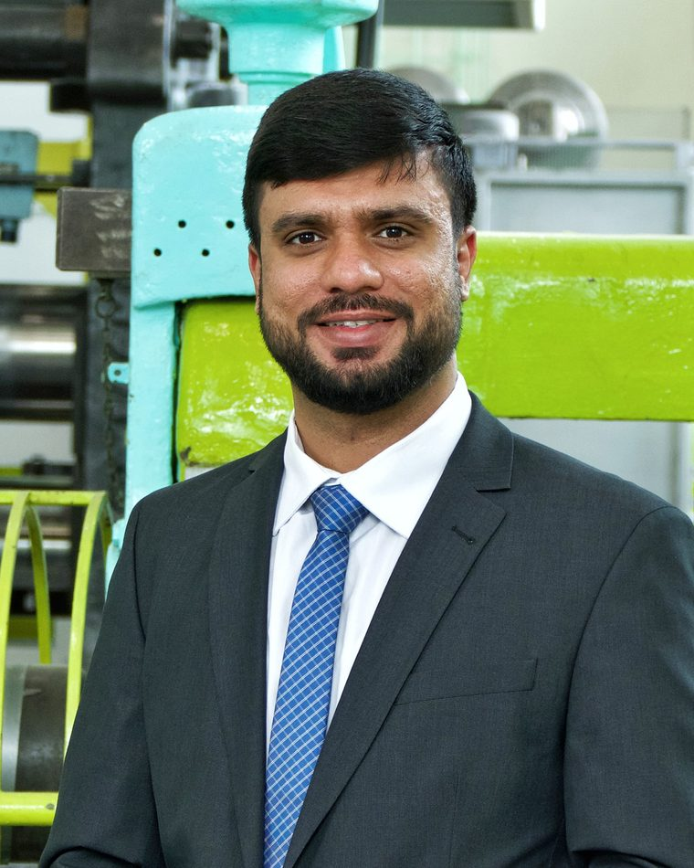

Faisal Qayyum Research Consulting
Your next academic move, planned with someone who has made it.
I spent nine years in German research and now teach in Saudi Arabia. I coach researchers and engineers moving to Germany or the Gulf, and I help when a PhD, a paper or a simulation is stuck.
Dr.-Ing. Faisal Qayyum · remote, worldwide · English, German or Urdu

Career moves
Where are you heading?
PhD, postdoc or research job in Germany
- Choosing between a PhD, a postdoc, a TV-L 13 post or industry
- Finding the right groups and writing to professors
- German-style applications and your first year there
Academic jobs in Saudi Arabia and the Gulf
- Faculty and postdoc posts in Saudi Arabia, the UAE, Qatar and Kuwait
- A CV and teaching record that Gulf committees look for
- Interviews, the questions to ask about an offer, and your first months
Research help
Stuck with your research?
Labs and companies: simulation & materials consulting. Research groups: workshops. Or see all services.
How it works
A written plan in about a week
Tell me what’s going on
A few lines on your situation and deadline. I reply within two working days.
Roadmap session
A 60-minute video call. I read your material beforehand.
Written plan
Within five working days: what to do, in which order, by when.
Your choice
Carry it out alone, or continue with me.
Why work with me
A working scientist, not a generic coach
“As a process engineer at TSMC, I needed a very specific understanding of how microstructural mechanisms connect to real-world material behavior. Dr. Qayyum bridged that gap between academic rigor and engineering practice in a way I hadn’t found anywhere else.”
“Dr. Qayyum’s scientific writing workshop was a career-defining experience. He turned what felt like an overwhelming task into a structured, learnable skill. My confidence in writing and presenting research results improved dramatically.”
“Anyone who has the opportunity to have Dr. Qayyum as a professor, mentor, leader, colleague, or even just a friend is exceptionally fortunate. He embodies each of these roles with integrity, passion, and excellence.”
Start here
Free guides from the blog
How to Land an Academic Job in Saudi Arabia — A Personal Playbook
Two to three years of deliberate groundwork: ground intelligence, profile alignment, LinkedIn networking, and understanding the informal job market that most applicants never see.
Read more → June 7, 2026 Career AdviceHow to Build a Postdoc Network in Germany Before You Need One
Most PhD researchers wait until they are finishing to start networking, then find nothing. Here is the system that builds a postdoc pipeline months before you need it.
Read more → October 3, 2026 Career AdviceHow to Write a Master’s Thesis in Germany: Outline, V0, Feedback, and How It Is Graded
A Freiberg supervisor’s method: outline first, write a rough version zero, get feedback early, and know what the grading rubric actually rewards.
Read more →FAQ
Before you write
No, and nobody honest can. Employers, committees and editors make those decisions. What I guarantee is the work we agree on: a careful diagnosis, a written plan or review, and straight answers about what is weak and how to fix it.
No. I coach you through the process: where to apply, your documents, interviews and the offer. I am not a recruiter, I take no fee tied to being hired, and questions about your own visa case go to a qualified lawyer.
Yes. Supervisor conflicts, authorship disputes and unpublished data stay between us. I never contact your supervisor or institution unless you ask me to.
No. You stay the author. I review, explain, plan and coach, and you make the changes, which keeps the work yours and within your university’s and journal’s rules.
You fill in a short form, we have a 60-minute video call, and within five working days you receive a written plan for your case: what to do, in which order, and a realistic timeline. Many people carry it out on their own.
Within two working days. Send a few lines about your situation and your deadline, or book a free 15-minute call if you would rather talk first.
Get help
Tell me what’s going on.
A few lines are enough. I read every message myself and reply within two working days.
- I reply with my honest read and whether I can help.
- If it fits, we book a Roadmap session.
- You get a written plan within five working days.
Rather talk first? Book a free 15-minute call. Prefer chat? WhatsApp or LinkedIn.